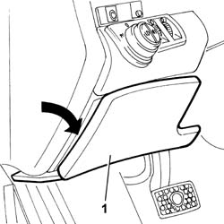
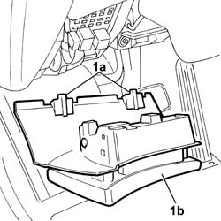

7040A37 Fuse access cover in instrument panel - R.R.
- Path
- Procedures > 70 FITTINGS > 7040 BODY INTERIOR UPHOLSTERY AND TRIM > 7040A PASSENGER COMPARTMENT TRIMS > 7040A37 Fuse access cover in instrument panel - R.R.
- Kind
- repair procedure (removal / refitting; the operation number is the code)
- Applies to
- all engines; all production periods
- Interactive page
- https://sloeber94.github.io/elrnDB-lThss/en/#/126596
Applies to: all engines; all production periods
 Removing
Removing
 Refitting
Refitting1. Open the fuse access cover where it says "PUSH".

Applies to: all engines; all production periods
1. Release the pins (1a) from the housing and remove the fuse access cover (1b).

Applies to: all engines; all production periods
Refitting
Removing- Check that the fuse access cover attachment pins are not damaged.
- Fit the fuse access cover in the housing and close it.
Topics that link to this page (11)
- 1040A74 INERTIA SWITCH for cutting off electric fuel pump circuit - R.R.
- 1040A74 INERTIA SWITCH for cutting off electric fuel pump circuit - R.R.
- 1040A74 INERTIA SWITCH for cutting off electric fuel pump circuit - R.R.
- 3330B02 PEDAL ASSEMBLY - R.R.
- 3330B16 PEDAL assembly - dismantling and repairing at the bench
- 4110A30 Support with steering control shafts - R.R.
- 5505C26 ENGINE COMPARTMENT built in wiring - R.R.
- 5505C41 PASSENGER COMPARTMENT built in WIRING - R.R.
- 7005A30 Left front side door housing seal - R.R.
- 7040L17 Passenger compartment front floor carpet - R.R.
- 7040L39 RUNNING BOARD FOR LEFT FRONT DOOR HOUSING - R.R.